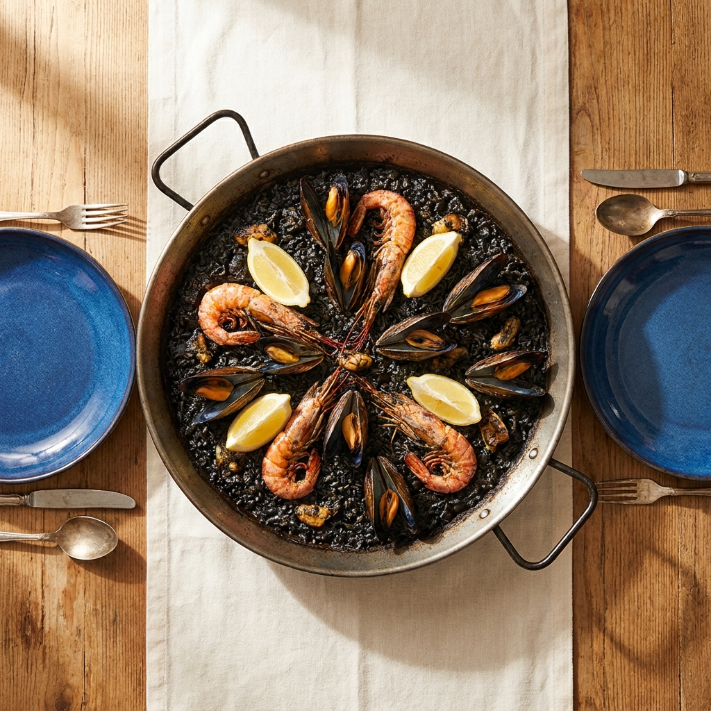
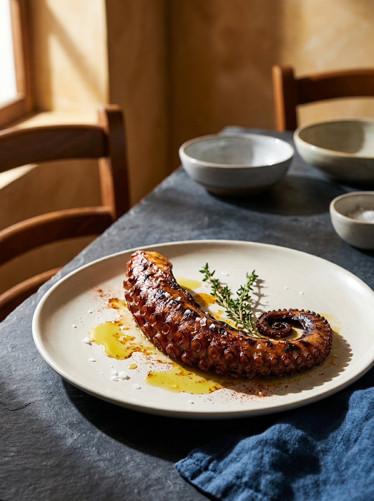
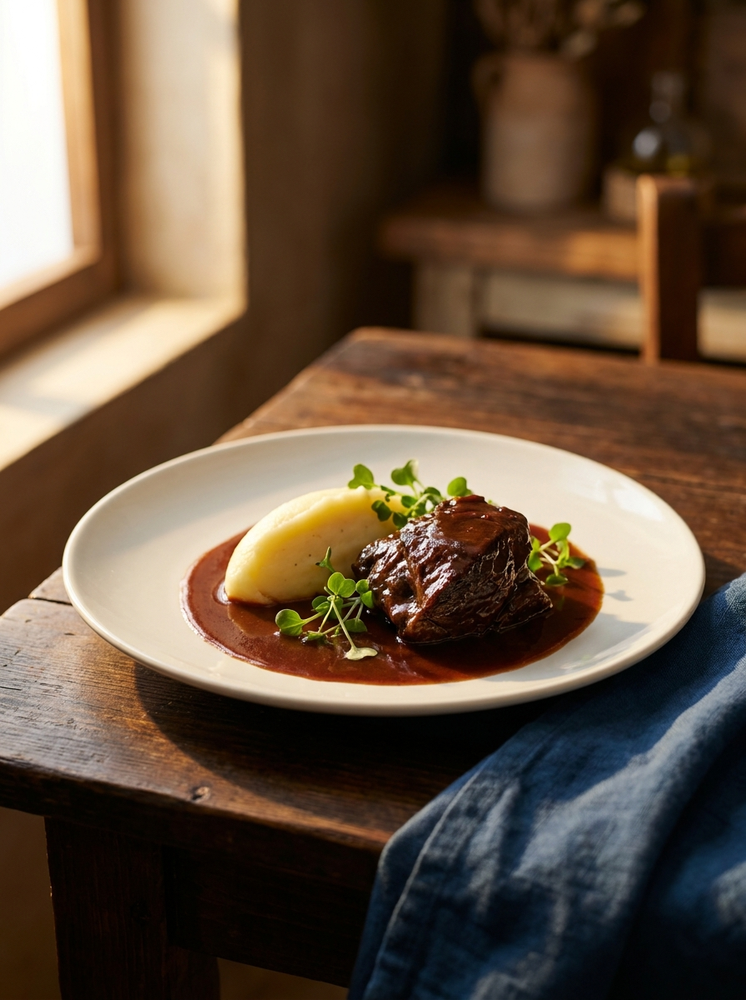

Tabla de ibérico
— precio del díaSelección de embutido ibérico, queso curado y pan crocante. Para compartir.
— De la casa
Arroces, pescados y carnes.
Hechos como tienen que hacerse.
— La lubina en sal · plato de la casa
La casa
Producto fresco, fuego, sal y tiempo. Esa es la receta. Arroces a la antigua, pescados que llegan del día y carnes a la brasa. Sin atajos, sin fórmulas.
Roberto en sala. Sunni en cocina. El resto lo cuenta el plato.
— Roberto y Sunni
Capítulo I
Pequeñas piezas para abrir la mesa mientras llega el arroz.
Selección de embutido ibérico, queso curado y pan crocante. Para compartir.
— De la casaTentáculo a la parrilla, aceite de oliva virgen, pimentón ahumado y sal en escamas.
— RecomendadoHechas en casa cada mañana. Crujientes por fuera, melosas por dentro.
Anillas frescas en harina ligera, fritas al momento. Limón.

Capítulo II · El fuego lento
Cazuela de hierro, caldo del día, soccarat al fondo. Todos para dos personas.
Arroz con tinta de calamar, mejillones y sofrito mediterráneo. Una de las grandes de la casa.
— RecomendadoMariscos pelados al servirse. La tradición valenciana sin manchar las manos.
Arroz con caldo de pescado de roca, alioli y reducción del fumet.
Bogavante fresco partido sobre lecho de arroz meloso. Para fechas señaladas.
Fideo fino, sofrito y mariscos. La hermana mediterránea de la paella.
El plato de la casa
Pieza entera del día, costra de sal gruesa, horno fuerte. Se rompe en mesa, se separa el lomo, se rocía con aceite de oliva. Nada más.
La mejor lubina en sal que he comido en Calpe en veinte años. — Reseña Tripadvisor (verificada)
Precio según pieza · Sugerencia para 2 personas
Capítulo III
Pescado del día, según mercado. Lo que entró por la mañana.
Tentáculo a la parrilla, pimentón de la Vera, aceite virgen y patata aplastada.
— De la casaSepia fresca con verduras de temporada y aceite de ajo y perejil.
Salmón sellado, pasta fresca, salsa cremosa de azafrán.

Capítulo IV
Cortes seleccionados, sal gruesa, brasa viva. Punto a tu gusto.
Mejilla de ternera braseada lentamente en vino tinto. Se deshace en el tenedor. Receta de la casa.
— De la casaPieza alta del lomo bajo, sal en escamas, mantequilla de hierbas. Punto a elegir.
Solomillo sellado, salsa cremosa de pimienta verde, patatas asadas con romero.
— Recomendado
Capítulo V
Postres caseros. Hechos cada mañana.
Cremosa por dentro, dorada por fuera. Sin atajos. El postre que pide repetir.
— De la casaCapítulo VI
Selección breve, mediterránea, bien medida.
Selección de tintos, blancos y rosados mediterráneos. Pregunta al camarero por la sugerencia del día.
Cerveza de barril, cervezas artesanales locales, refrescos y agua mineral.